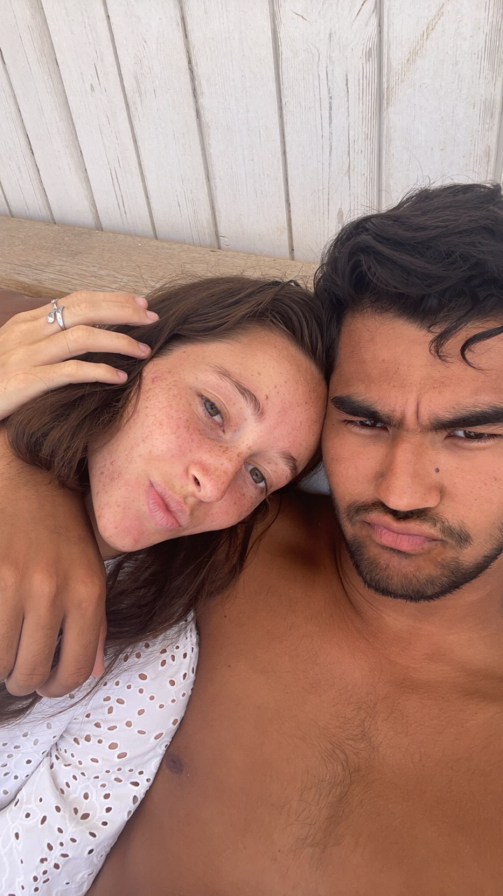
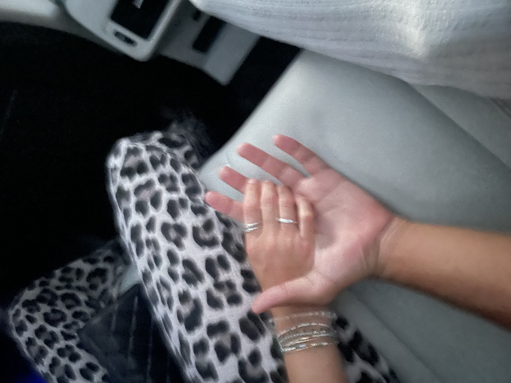
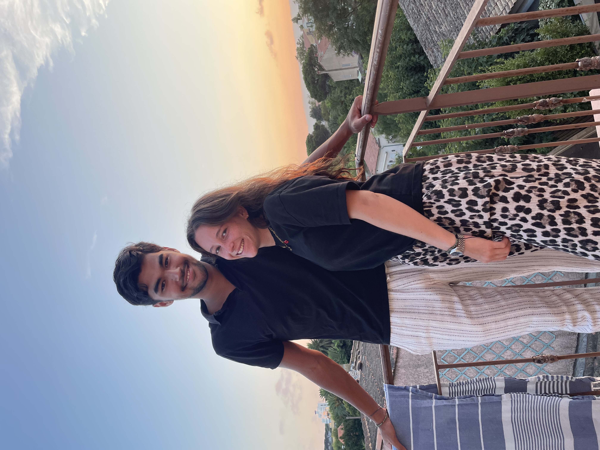
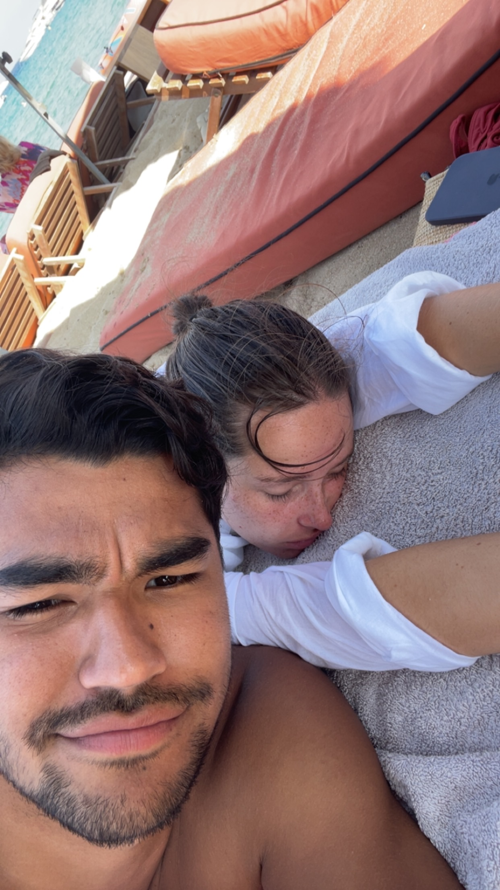

À l'ESSCA, deux âmes se sont croisées. C'était le début d'une grande histoire.
Je descendais en bas de chez toi tous les soirs, incapable de m’éloigner. Même le froid n’y pouvait rien.
Ce jour-là, j’ai su que c’était toi.
En rentrant de l'anniversaire de David… Mon cœur a parlé avant moi.
Un mariage… et moi qui me voyais t’y emmener pour de bon.

Un an, cinq mois, chaque seconde gravée
Entre appels, silences, et rires partagés
De tes yeux aux étoiles, il n’y a qu’un pas
Et moi je le fais, en rêvant de toi
Dans les Pouilles, j’ai vu clair tout à coup
C’était pas un mariage… c’était nous
Alors voilà, devant ce monde fictif
Je pose un genou, et brise le passif
Clique sur l’image ci-dessous…
Mon cœur y dépose un anneau. 💍
Cette fois j’ai pas oublié notre anniversaire.